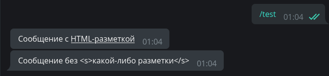
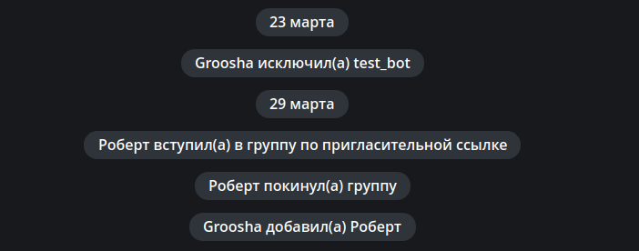
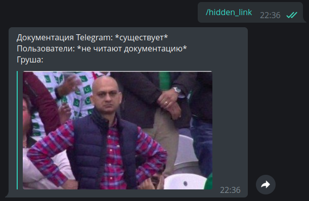

Xabarlar bilan ishlash¶
Foydalanilayotgan aiogram versiyasi: 3.7.0
Ushbu bo'limda biz xabarlarga turli formatlash turlarini qanday qo'llashni va media fayllar bilan ishlashni o'rganamiz.
Matn¶
Matnli xabarlarni qayta ishlash ko'pchilik botlar uchun eng muhim vazifalaridan biridir. Matn yordamida deyarli hamma narsani ifodalash mumkin va bazan ma'lumotni chiroyli tarzda taqdim etish zarur bo'ladi. Dasturchida ixtiyorida matnni belgilashning uchta usuli mavjud: HTML, Markdown va MarkdownV2. Ulardan eng rivojlanganlari HTML va MarkdownV2 bo'lib, "klassik" Markdown usuli kamroq imkoniyatlarni ega va u aiogramda endi ishlatilmaydi.
Matn bilan ishlash usullarini ko'rib chiqishdan oldin, aiogram 3.x ning 2.x dan muhim farqini eslatib o'tish kerak: ikkinchi veersiyada standart bo'yicha faqat matnli xabarlar qayta ishlanar edi, uchda esa har qanday turdagi xabarlar qayta ishlanadi. Aniqroq qilib aytganda, endi faqat matnli xabarlarni qanday tutib qolish kerakligi quyida ko'rsatilgan:
# dekorator bilan eski usul
@dp.message_handler()
async def func_name(...)
# funksiya registrator bilan eski usul
dp.register_message_handler(func_name)
# dekorator bilan yangi usul
from aiogram import F
@dp.message(F.text)
async def func_name(...)
# funksiya registrator bilan yangi usul
dp.message.register(func_name, F.text)
"Sehrli filtr" F haqida boshqa bo'limda gaplashamiz.
Formatlangan chiqish¶
Xabarlarni yuborishda formatlashni tanlash uchun parse_mode argumenti javob beradi, masalan:
from aiogram import F
from aiogram.types import Message
from aiogram.filters import Command
from aiogram.enums import ParseMode
# Agar F.text filtrini ko'rsatmasangiz,
# handler hatto /test yozuvi bilan rasmga ham ishlaydi
@dp.message(F.text, Command("test"))
async def any_message(message: Message):
await message.answer(
"Hello, <b>world</b>!",
parse_mode=ParseMode.HTML
)
await message.answer(
"Hello, *world*\!",
parse_mode=ParseMode.MARKDOWN_V2
)

Agar botda doimiy ravishda ma'lum bir formatlash ishlatilsa, har safar parse_mode argumentini ko'rsatish noqulay
bo'lishi mumkin. Yaxshiyamki, aiogramda botning standart sozlamalarini belgilash mumkin. Buning uchun DefaultBotProperties
obyektini yarating va kerakli sozlamalarni unga o'tkazing:
from aiogram.client.default import DefaultBotProperties
bot = Bot(
token="123:abcxyz",
default=DefaultBotProperties(
parse_mode=ParseMode.HTML
# bu yerda yana boshqa qiziqarli sozlamalar ham bor
)
)
bot = Bot(token="123:abcxyz", parse_mode="HTML")
# qandaydir funksiyada...
await message.answer("HTML-belgilanishi bilan <u>xabar</u>")
# formatlashni aniq o'chirish uchun,
# parse_mode=None ni ko'rsating
await message.answer(
"Hech qanday <s>belgilanishsiz xabar</s>",
parse_mode=None
)

Kiritishni ekranga chiqarish¶
Ko'pincha botda xabarining yakuniy matni oldindan ma'lum bo'lmaydi va bot uni qandaydir tashqi
ma'lumotlar asosida shakllantiriladi: foydalanuvchining ismi, uning kiritgan ma'lumotlari va hokazo.
Keling, foydalanuvchini uning to'liq ismi bilan (first_name + last_name) salomlashadigan
/hello komandasi uchun handler yozamiz, masalan: «Hello, Ivan Ivanov»:
from aiogram.filters import Command
@dp.message(Command("hello"))
async def cmd_hello(message: Message):
await message.answer(
f"Hello, <b>{message.from_user.full_name}</b>",
parse_mode=ParseMode.HTML
)
Hammasi yaxshi ishladi natijani quyidagi tasvirda ko'rish mumkin:

Ammo bu yerda <Cлавик777> ismli foydalanuvchi botga habar yzosa va bot javob qaytarmaydi! Loglarda quyidagilarni ko'rishimiz mumkin:
aiogram.exceptions.TelegramBadRequest: Telegram server says - Bad Request: can't parse entities:
Unsupported start tag "Славик777" at byte offset 7
Obbo, bizda HTML formatlash rejimi yoqilganku va Telegram <Cлавик777> ni HTML teg sifatida qabul qilishga harakat qilmoqda. Bu muammo. Ammo bu muammoni hal qilishning bir necha yo'li bor. Birinchi usul: uzatiladigan qiymatlarni ekranga chiqarish.
from aiogram import html
from aiogram.filters import Command
@dp.message(Command("hello"))
async def cmd_hello(message: Message):
await message.answer(
f"Hello, {html.bold(html.quote(message.from_user.full_name))}",
parse_mode=ParseMode.HTML
)
Ikkinchi usul biroz murakkabroq, lekin yanada yaxsh usul hisoblanadi: matnni alohida va qaysi qismlar formatlanishi kerakligi haqidagi ma'lumotni alohida yig'adigan maxsus klassdan foydalanish.
from aiogram.filters import Command
from aiogram.utils.formatting import Text, Bold
@dp.message(Command("hello"))
async def cmd_hello(message: Message):
content = Text(
"Hello, ",
Bold(message.from_user.full_name)
)
await message.answer(
**content.as_kwargs()
)
Yuqoridagi misolda **content.as_kwargs() konstruktsiyasi text, entities, parse_mode argumentlarini qaytaradi
va ularni answer() funksiyasiga lug'at ko'rinishida uzatadi.
Ushbu formatlash vositasi juda keng qamrovli bo'lib, rasmiy hujjatlarda murakkab tuzilmalarni qanday qulay ko'rsatishni mumkinligini ko'rishinggiz mumkin, masalan:
from aiogram.filters import Command
from aiogram.utils.formatting import (
Bold, as_list, as_marked_section, as_key_value, HashTag
)
@dp.message(Command("advanced_example"))
async def cmd_advanced_example(message: Message):
content = as_list(
as_marked_section(
Bold("Success:"),
"Test 1",
"Test 3",
"Test 4",
marker="✅ ",
),
as_marked_section(
Bold("Failed:"),
"Test 2",
marker="❌ ",
),
as_marked_section(
Bold("Summary:"),
as_key_value("Total", 4),
as_key_value("Success", 3),
as_key_value("Failed", 1),
marker=" ",
),
HashTag("#test"),
sep="\n\n",
)
await message.answer(**content.as_kwargs())

Turli formatlash usullari va qo'llab-quvvatlanadigan teglar haqida batafsil Bot API hujjatlarida bilib olishingiz mumkin.
Formatlashni saqlash¶
Tasavvur qiling, bot foydalanuvchidan formatlangan matn olishi va unga o'zidan biror narsani, masalan, vaqt belgisini qo'shishi holatini ko'rib chiqamiz:
# yangi import
from datetime import datetime
@dp.message(F.text)
async def echo_with_time(message: Message):
# Hozirgi vaqtni kompyuterning vaqt zonasida olamiz
time_now = datetime.now().strftime('%H:%M')
# Qo'shimcha matnni qo'shib qo'yamiz
added_text = html.underline(f"Создано в {time_now}")
# Qo'shilgan matnni o'z ichiga olgan yangi xabar yuboramiz
await message.answer(f"{message.text}\n\n{added_text}", parse_mode="HTML")

Hooop, nimadir noto'g'ri ketdi to'g'rimi, nima uchun asl xabar formatlangan qiya va qalin holatda chiqmadi?
Bu message.text hech qanday formatlashlarsiz shunchaki matnni qaytarishi tufaylidir.
Kerakli formatda matn olish uchun alternativ xususiyatlardan foydalanishimiz mumkin:
message.html_text yoki message.md_text. Hozir bizga birinchi variant kerak.
Yuqoridagi misolda message.text ni message.html_textga almashtiramiz va to'g'ri natijani olamiz:

Entities bilan ishlash¶
Telegram dasturchilarga foydalanuvchi xabarlarini o'zi tarafidan oldindan qayta ishlash orqali dasturchilar ishini ancha yengillashtiradi.
Masalan, ba'zi ob'ektlar elektron pochta, telefon raqami, foydalanuvchi nomi va boshqalar.
Biz bularni Muntazam ifodalar (Regular_expression) bilan olishimiz shart emas,
balki to'g'ridan-to'g'ri Message obyekti va entities maydonidan olinishi mumkin,
bular esa MessageEntity turidagi ob'ektlarning ro'yxatini o'z ichiga oladi.
Misol tariqasida, xabardan havola, elektron pochta va qalin va qiya matnini chiqaradigan handler yozamiz.
Bu yerda e'tibor qilishimiz kerak bo'lgan bir narsa bor. Telegram pochta, havola, qiya, qalin matnlarning o'zini emas, balki matndagi boshlanishini va uzunligini qaytaradi.
Bundan tashqari, matn UTF-8 belgilarida hisoblanadi, lekin entities UTF-16 bilan ishlaydi, shuning uchun UTF-16 belgilar
(masalan emoji) mavjud bo'lsa, faqat pozitsiya va uzunlikni olish orqali foydalanishinggiz sizning qayta ishlangan matningizda hatoliklarga olib kelishi mumkin.
Buni eng yaxshi quyidagi misol namoyish etadi. Skrinshotda botning birinchi javobi "to'g'ridan-to'g'ri" tahlil natijasidir,
ikkinchi javob esa aiogramning extract_from() metodini entity ustida qo'llash natijasidir. Unga kirish uchun barcha asl matn uzatiladi:
@dp.message(F.text)
async def extract_data(message: Message):
data = {
"url": "<N/A>",
"email": "<N/A>",
"code": "<N/A>"
}
entities = message.entities or []
for item in entities:
if item.type in data.keys():
# Xato
# data[item.type] = message.text[item.offset : item.offset+item.length]
# To'g'ri
data[item.type] = item.extract_from(message.text)
await message.reply(
"Вот что я нашёл:\n"
f"URL: {html.quote(data['url'])}\n"
f"E-mail: {html.quote(data['email'])}\n"
f"Пароль: {html.quote(data['code'])}"
)

Buyruqlar va ularning argumentlari¶
Telegram foydalanuvchilarga ma'lumot kiritishning ko'plab usullarini taqdim etadi.
Ulardan biri buyruqlar yani slesh bilan boshlanadigan kalit so'zlar, masalan, /new yoki /ban kabi.
Lekin bazan bot shunday dasturlanishi mumkinki, buyruqdan keyin qandaydir argumentlar kutiladi, masalan,
/ban 2d yoki /settimer 20h This is delayed message. Aiogram tarkibida dasturchilarning ishini osonlashtiradigan
Command() filtri mavjud. So'nggi misolni quydagi kodda amalga oshirib ko'ramiz:
@dp.message(Command("settimer"))
async def cmd_settimer(
message: Message,
command: CommandObject
):
# Agar hech qanday argument kiritilmasa,
# command.args None bo'ladi
if command.args is None:
await message.answer(
"Ошибка: не переданы аргументы"
)
return
# Argumentlarni birinchi uchragan bo'sh joy bo'yicha ikki qismga ajratishga harakat qilamiz
try:
delay_time, text_to_send = command.args.split(" ", maxsplit=1)
# Agar ikki qismdan kam bo'lsa, ValueError yuzaga keladi
except ValueError:
await message.answer(
"Ошибка: неправильный формат команды. Пример:\n"
"/settimer <time> <message>"
)
return
await message.answer(
"Таймер добавлен!\n"
f"Время: {delay_time}\n"
f"Текст: {text_to_send}"
)
Buyruqni turli argumentlar bilan (yoki umuman argumentsiz) uzatishga harakat qilib, natijalarini tekshirib ko'ramiz:

Guruhlarda buyruqlar bilan kichik muammo yuzaga kelishi mumkin. Telegram avtomatik ravishda slesh bilan boshlanadigan buyruqlarni boshqa rangda yorqin qilib ko'rsatadi, buning natijasida ba'zan guruh a'zolari uni bosib ko'rishi mumkin va shunday holatlar yuzaga keladi (skrinshotni yaratishda yordam bergan aziz obunachilarimga rahmat):

Buni oldini olish uchun Command() klasida prefix nomli maydoni mavjud. Bu bilan siz buyruqlar qanaqa belgi bilan boshlanganda ishlashini belgilab qo'yishinggiz mumkin.
Ular oddiy matn bilan bir xil rangda bo'ladi va yozish uchun to'liq qo'lda kiritishni talab qiladi, shuning uchun bunday yondashuvning foydasini o'zingiz baholashingiz mumkin.
@dp.message(Command("custom1", prefix="%"))
async def cmd_custom1(message: Message):
await message.answer("Вижу команду!")
# Bir nechta prefikslarni ko'rsatish mumkin
@dp.message(Command("custom2", prefix="/!"))
async def cmd_custom2(message: Message):
await message.answer("И эту тоже вижу!")

Maxsus prefikslarning guruhlardagi muammosi shundaki Privacy Mode yoqilgan (birlamchi holatda), admin bo'lmagan botlar bunday buyruqlarni telegram mantig'i tufayli ko'rmasligi mumkin. Eng keng tarqalgan foydalanish holati bu guruh moderator botlari bo'lib, ular allaqachon administrator hisoblanadi.
Diplinklar¶
Telegramda bir oz ko'proq imkoniyatlarga ega bo'lgan bitta buyruq mavjud. Bu /start. Gap shundaki, t.me/bot?start=xxx
kabi havolani yasash mumkin va bunday havolaga o'tganda foydalanuvchiga "Boshlash" tugmasi ko'rsatiladi, u bosilganda bot
/start xxx xabarini oladi. Ya'ni, havolada qo'shimcha parametr joylashtiriladi, bu qo'lda kiritishni talab qilmaydi.
Bu "deep link" deb ataladi va turli narsalar uchun ishlatilishi mumkin: turli buyruqlarni
faollashtirish uchun shartliklar, referal tizim, botni tezkor sozlash va h.k. Keling, ikki misol yozamiz:
import re
from aiogram import F
from aiogram.types import Message
from aiogram.filters import Command, CommandObject, CommandStart
@dp.message(Command("help"))
@dp.message(CommandStart(
deep_link=True, magic=F.args == "help"
))
async def cmd_start_help(message: Message):
await message.answer("Bu yordam xabari")
@dp.message(CommandStart(
deep_link=True,
magic=F.args.regexp(re.compile(r'book_(\d+)'))
))
async def cmd_start_book(
message: Message,
command: CommandObject
):
book_number = command.args.split("_")[1]
await message.answer(f"Sending book №{book_number}")

E'tibor bering, start orqali deep link foydalanuvchini bot bilan shaxsiy suhbatga yuboradi. Agar guruhni tanlash va deep linkni
u yerga yuborish kerak bo'lsa, startni startgroup bilan almashtiring. Shuningdek, aiogramda deep linklarni to'g'ridan-to'g'ri
koddan yaratish uchun qulay funktsiya mavjud.
Botlar uchun bo'lmagan ko'proq diplinklar
Telegram hujjatlarida foydalanuvchi ilovalari uchun barcha turdagi diplinklarning batafsil tavsifi mavjud: https://core.telegram.org/api/links
Havolalar oldindan ko'rish¶
Odatda matnli xabarlarni havolalar bilan yuborishda Telegram birinchi havolani topib, uning oldindan ko‘ruv (Preview) ko‘rinishini
ko‘rsatishga harakat qiladi. Bu xatti-harakatni send_message() metodining link_preview_options argumenti sifatida
LinkPreviewOptions obyektini berib o'zingiz xohlagan tarzda sozlashingiz mumkin
# Yangi import
from aiogram.types import LinkPreviewOptions
@dp.message(Command("links"))
async def cmd_links(message: Message):
links_text = (
"https://nplus1.ru/news/2024/05/23/voyager-1-science-data"
"\n"
"https://t.me/telegram"
)
# Havola o'chirilgan
options_1 = LinkPreviewOptions(is_disabled=True)
await message.answer(
f"Нет превью ссылок\n{links_text}",
link_preview_options=options_1
)
# -------------------- #
# Kichik oldindan ko'ruv uchun prefer_small_media'ni True qilish kerak
options_2 = LinkPreviewOptions(
url="https://nplus1.ru/news/2024/05/23/voyager-1-science-data",
prefer_small_media=True
)
await message.answer(
f"Маленькое превью\n{links_text}",
link_preview_options=options_2
)
# -------------------- #
# Katta oldindan ko'ruv uchun prefer_large_media'ni True qilish kerak
options_3 = LinkPreviewOptions(
url="https://nplus1.ru/news/2024/05/23/voyager-1-science-data",
prefer_large_media=True
)
await message.answer(
f"Большое превью\n{links_text}",
link_preview_options=options_3
)
# -------------------- #
# Kichik oldindan ko'ruv va matnning ustiga joylashni bir vaqtda ishlatishimiz mumkin
options_4 = LinkPreviewOptions(
url="https://nplus1.ru/news/2024/05/23/voyager-1-science-data",
prefer_small_media=True,
show_above_text=True
)
await message.answer(
f"Маленькое превью над текстом\n{links_text}",
link_preview_options=options_4
)
# -------------------- #
# Oldindan ko'ruv uchun qaysi havolani ishlatishni tanlashingiz mumkin
options_5 = LinkPreviewOptions(
url="https://t.me/telegram"
)
await message.answer(
f"Предпросмотр не первой ссылки\n{links_text}",
link_preview_options=options_5
)
Natija:

Shuningdek, ba'zi oldindan ko'ruv parametrlarini DefaultBotPropertiesda birlamchi holat sifatida belgilash mumkin,
bu haqida bob boshida aytilgan edi.
Mediafayllar¶
Fayllarni telegramga yuklash¶
Telegram oddiy matnli xabarlardan tashqari turli xil media fayllarni almashishga imkon beradi: rasm, video, giflar,
geolokatsiyalar, stikerlar va h.k. Ko'pchilik media fayllarda file_id va file_unique_id xususiyatlari mavjud.
Birinchisini bir xil faylni qayta-qayta yuborish uchun ishlatish mumkin, chunki fayl allaqachon Telegram serverlarida
saqlanadi. Bu eng afzal usuldir.
Masalan, quyidagi kod botni foydalanuvchiga yuborilgan gifni darhol o'ziga qayta yuborishga misol bo'la oladi:
@dp.message(F.animation)
async def echo_gif(message: Message):
await message.reply_animation(message.animation.file_id)
Har doim to'g'ri file_id dan foydalaning!
Bot yuborish uchun faqat o'zi bevosita olgan file_id dan foydalanishi kerak,
masalan foydalanuvchidan shaxsiy xabarlar orqali yoki guruh/kanaldagi media faylni ko'rgan holda.
Shu bilan birga, agar boshqa botdan olingan file_id dan foydalanishga harakat qilinsa ishlashi mumkin,
Ammo bir muncha vaqt o'tgach wrong url/file_id specified xatosi olinadi.
Shuning uchun faqat o'z botingizning file_id sidan foydalaning!
file_id dan farqli ravishda, file_unique_id identifikatoridan media faylni qayta yuborish yoki
yuklab olish uchun foydalanish mumkin emas, lekin u muayyan media uchun barcha botlarda bir xil bo'ladi.
Odatda file_unique_id bir nechta botlar o'zlarining file_id lari bir xil faylga tegishli ekanligini bilishi kerak bo'lganda kerak bo'ladi.
Agar fayl hali Telegram serverida mavjud bo'lmasa, bot uni uch xil usulda Telegramga yuklashi mumkin:
Oddiy fayl sifatida, havola orqali va to'g'ridan-to'g'ri baytlar to'plami sifatida.
Yuborishni tezlashtirish va umuman olganda serverlarga nisbatan ehtiyotkorlik bilan munosabatda bo'lish uchun,
Telegram fayllarini yuklashni (upload) bir marta amalga oshirish va keyinchalik birinchi yuklashdan keyin mavjud
bo'lgan file_id dan foydalanish to'g'riroq bo'ladi.
Aiogram 3.x da fayllar va media yuborish uchun 3 ta klass mavjud - FSInputFile, BufferedInputFile,
URLInputFile, ular bilan aiogram hujjatlarida
tanishishingiz mumkin.
Keling, rasmlarni turli usullar bilan yuborishning oddiy misolini ko'rib chiqaylik:
from aiogram.types import FSInputFile, URLInputFile, BufferedInputFile
@dp.message(Command('images'))
async def upload_photo(message: Message):
# Bu yerda yuborilgan fayllar file_id sini keyin ulardan foydalanish uchun saqlaymiz
file_ids = []
# BufferedInputFile ni qo'llash uchun `open()` kabi "odatiy" fayl ochilish usulidan foydalanamiz.
# Ammo ushbu usul masalan Pillow orqali rasm tahrirlash amalga oshirilgandan so'ng,
# RAMdan baytlarni yuborish uchun eng mos usul hisoblanadi
with open("buffer_emulation.jpg", "rb") as image_from_buffer:
result = await message.answer_photo(
BufferedInputFile(
image_from_buffer.read(),
filename="image from buffer.jpg"
),
caption="Изображение из буфера"
)
file_ids.append(result.photo[-1].file_id)
# Fayl tizimi orqali faylni yuborish
image_from_pc = FSInputFile("image_from_pc.jpg")
result = await message.answer_photo(
image_from_pc,
caption="Изображение из файла на компьютере"
)
file_ids.append(result.photo[-1].file_id)
# Havola orqali fayl yuborish
image_from_url = URLInputFile("https://picsum.photos/seed/groosha/400/300")
result = await message.answer_photo(
image_from_url,
caption="Изображение по ссылке"
)
file_ids.append(result.photo[-1].file_id)
await message.answer("Отправленные файлы:\n"+"\n".join(file_ids))
Rasmlar, videolar va GIF'lar uchun sarlavhani yuqoriga ko'chirishingiz mumkin:
@dp.message(Command("gif"))
async def send_gif(message: Message):
await message.answer_animation(
animation="<GIF file_id'si>",
caption="Я сегодня:",
show_caption_above_media=True
)
Fayllarni telegramdan yuklab olish¶
Faylni foydalanuvchiga qaytarib yuborishdan tashqari bot mediani o'z kompyuteriga/serveriga yuklab olishi mumkin. Buning uchun Bot
klasidagi ob'ektda download() usuli mavjud. Quyidagi misollarda fayllar to'g'ridan-to'g'ri fayl tizimiga yuklab olinadi,
Ammo buning o'rniga, keyinchalik ba'zi kodlar (masalan Pillow) da foydalanish uchun uni BytesIO ob'ektida xotirada saqlashinggiz ham mumkin.
@dp.message(F.photo)
async def download_photo(message: Message, bot: Bot):
await bot.download(
message.photo[-1],
destination=f"/tmp/{message.photo[-1].file_id}.jpg"
)
@dp.message(F.sticker)
async def download_sticker(message: Message, bot: Bot):
await bot.download(
message.sticker,
# Windows uchun path'ni tuzatishimiz kerak
destination=f"/tmp/{message.sticker.file_id}.webp"
)
Nega biz rasmlar uchun message.photo emas, balki message.photo[-1] dan foydalandik ?
Chunki Telegram'dagi rasmlar bir vaqtning o'zida bir nechta nusxada yuboriladi. Barchasi bir xil ammo
turli o'lchamda, bunda rasmlar list ko'rinishida sifatsizdan sifatligacha tartiblangan bo'ladi.
Shunga ko'ra eng sifatli rasmni olish uchun photo[-1] dan foydalanamiz va biz eng sifatli rasm hajmi bilan ishlashimiz mumkin.
Katta hajmdagi fayllarni yuklab olish
Telegram Bot API'dan foydalanadigan botlar 20 megabaytdan oshmaydigan fayllarni yuklashi mumkin. Agar siz katta hajmdagi fayllarni yuklab olishni/yuklashni rejalashtirmoqchi bo'lsangiz, Telegram Bot API bilan emas, Telegram Client API bilan o'zaro aloqada bo'lgan kutubxonalardan foydalanishinggiz yaxshiroq, masalan, Telethon yoki Pyrogram. Ko'pchilik bilishmaydi lekin Telegram Client API dan nafaqat oddiy hisoblar, balki botlar ham foydalanishi mumkin
Bot API 5.0 versiyasidan boshlab siz katta fayllar bilan ishlash uchun o'zingizning Bot API serveringizdan foydalanishingiz mumkin.
Albomlar¶
Biz Telegram'da albomlar (yani media guruh) deb ataydigan narsa, aslida umumiy media_group_id ga ega bo‘lgan va
foydalanuvchilariga vizual tarzda "bitta" habar ko'rinishida ko'rinadigan bir nechta habarlardir.
Aiogramda 3.1 versiyasidan boshlab "jamlagich" albomi mavjud bo'lib,
Quyida biz uning ishlashini ko'rib chiqamiz. Ammo avvalo media guruhlarning bir nechta xususiyatlarini sanab o'tishimiz kerak:
- Hech qanday usul bilan ularga inline klaviatura qo'shish yoki repyl klaviaturani birga yuborish mumkin emas.
- Albomdagi har bir media fayl o'ziga xos izohga (caption) ega bo'lishi mumkin. Agar faqat bitta media izohga ega bo'lsa, u butun albom uchun umumiy izoh sifatida chiqariladi.
- Suratlarni bir albomda videolar bilan aralashtirib yuborish mumkin, ammo fayllar (Document) va musiqa (Audio) hech narsaga aralashtirilmaydi, faqat shu turdagi media bilan.
- Albomda 10 tadan ko'p media fayl bo'lishi mumkin emas.
Keling buni aiogramda qanday qilinishini ko'rib chiqaylik:
from aiogram.filters import Command
from aiogram.types import FSInputFile, Message
from aiogram.utils.media_group import MediaGroupBuilder
@dp.message(Command("album"))
async def cmd_album(message: Message):
album_builder = MediaGroupBuilder(
caption="Общая подпись для будущего альбома"
)
album_builder.add(
type="photo",
media=FSInputFile("image_from_pc.jpg")
# caption="Подпись к конкретному медиа"
)
# Agar biz medianing turini bilsak
# add_<media tipi> ko'rinishida foydalanishimiz mumkin
album_builder.add_photo(
# Havolalar yoki file_id uchun darhol qiymatni ko'rsatish kifoya
media="https://picsum.photos/seed/groosha/400/300"
)
album_builder.add_photo(
media="<sizdagi file_id>"
)
await message.answer_media_group(
# build() metodini chaqirishni unutmang
media=album_builder.build()
)
Natija:
Ammo albomlarni yuklab olishda hammasi ancha rasvo... Yuqorida aytilganidek, albomlar - bu shunchaki guruhlangan alohida xabarlardir, demak ular botga ham turli xil yangilanish (Update) larda keladi. Butun albomni bittada qabul qilish uchun 100% ishonchli usul mavjud emas, lekin buni minimal yo'qotishlar bilan amalga oshirishga harakat qilish mumkin. Odatda, bu middleware orqali amalga oshiriladi, media guruhlarni qabul qilish bo'yicha mening shaxsiy yechimimni ushbu havola orqali topishingiz mumkin.
Xizmat (servis) xabarlari¶
Telegramdagi xabarlar matnli, media fayllar va xizmat (ya'ni, servis) xabarlarga bo'linadi. Keling ularning oxirgisi haqida gaplashishamiz.

Ular g‘alati ko‘rinishga ega va ular bilan o‘zaro aloqalar cheklangan bo‘lishiga qaramay, ular o‘zining ID raqamlari bor va hatto ularning egasi mavjud bo‘lgan xabarlardir. Shuni ta’kidlash kerak-ki, xizmat xabarlarining qo‘llanilish doirasi yillar davomida o‘zgarib bordi va hozirda sizning botingiz ular bilan ishlamasligi yoki faqat o‘chirish bilan shug‘ullanishi mumkin.
Batafsil ma’lumotga to'xtalmasdan, aniq bir misolni ko‘rib chiqamiz: Guruhga yangi kirgan a'zoga "xush kelibsiz" xabarini yuborib ko'ramiz. Bunday xizmat xabarida content_type "new_chat_members"ga teng bo‘ladi, ammo bu aslida bir xil nomdagi maydonga ega bo‘lgan Message obyekti hisoblanadi."
@dp.message(F.new_chat_members)
async def somebody_added(message: Message):
for user in message.new_chat_members:
# full_name maydoni ism va familiyani olib beradi
# (screenshotda foydalanuvchilarning familiyasi yo'q)
await message.reply(f"Привет, {user.full_name}")

Shuni esda tutingki message.new_chat_members ro'yxatdir, chunki bitta foydalanuvchi bir vaqtning o'zida
bir nechta ishtirokchilarni qo'shishi mumkin. Shuningdek, message.from_user va message.new_chat_members maydonlarini
adashtirmaslik kerak. Birinchisi - bu subyekt, ya'ni harakatni amalga oshirgan shaxs. Ikkinchisi - bu harakat ob'yektlari.
Ya'ni agar siz «Anna Boris va Viktorni qo'shdi» ko'rinishidagi xabarni ko'rsangiz, message.from_user - bu Anna haqidagi
ma'lumot, va message.new_chat_members ro'yxati Boris va Viktor haqidagi ma'lumotni o'z ichiga oladi.
Xizmat xabarlariga to'liq ishonmang!
Yangi a'zolar qo'shilishi (new_chat_members) va chiqib ketishi (left_chat_member) haqida xizmat xabarlarida bitta noxush holat mavjud: ular ishonchsiz, ya'ni umuman xabar yaratilmasligi mumkin. Masalan, new_chat_members haqidagi xabar, bu habar 10k (10 ming) ishtirokchiga yaqin bo'lgan guruhda yaratilmaydi, left_chat_member esa 50 ta ishtirokchida (lekin bu bobni yozishda men 9 ishtirokchili guruhda left_chat_member xabari yaratilmaganiga duch keldim. Yarim soat o'tgach, boshqa odam chiqib ketganda shu guruhda xabar paydo bo'ldi).
Bot API 5.0 chiqarilishi bilan dasturchilar istalgan o'lchamdagi guruhlarda va shuningdek kanallarda a'zolarning kirishi/chiqishini ko'rishning ancha ishonchli usuliga ega bo'ldilar. Ammo bu haqda boshqa safar gaplashamiz.
Bonus: matnda havolani yashirish¶
Ba'zi holatlarda rasm bilan uzun xabar yuborish kerak bo'lib qolishi mumkin, lekin media fayllarga qo'yiladigan izohlar
limiti 1024 ta belgi, oddiy matnli xabarlarda esa bu 4096 ta belgini tashkil etadi. Media havolasini pastda matnga qo'shish
esa chiroyli ko'rinmaydi. Bu muammoni hal qilish uchun bir necha yil avval HTML-belgilashda "yashirin havolalar" usuli o'ylab topilgan.
Asosi shundaki, havolani nol kenglikdagi bo'shliqqa joylashtirib,
butun konstruktsiyani xabar boshiga qo'yish mumkin. Kuzatuvchi uchun xabarda ortiqcha narsa ko'rinmaydi
lekin Telegram serveri barchasini ko'radi va oldindan ko'ruv(preview)ni qo'shadi.
Aiogram ishlab chiquvchilari buning uchun hatto hide_link() nomli maxsus yordamchi metodini yaratishgan:
# yangi import
from aiogram.utils.markdown import hide_link
@dp.message(Command("hidden_link"))
async def cmd_hidden_link(message: Message):
await message.answer(
f"{hide_link('https://telegra.ph/file/562a512448876923e28c3.png')}"
f"Документация Telegram: *существует*\n"
f"Пользователи: *не читают документацию*\n"
f"Груша:"
)

Yuqorida ko'rsatilgan LinkPreviewOptions yordamida yuqorida uzun 4096 belgilik izoh bilan media faylni qo'yishingiz mumkin.
Hozircha shu. Keyingi boblarda ko'rishguncha!
Layk bosing, obuna bo'ling, qo'ng'iroq tugmasini bosishni unutmang!